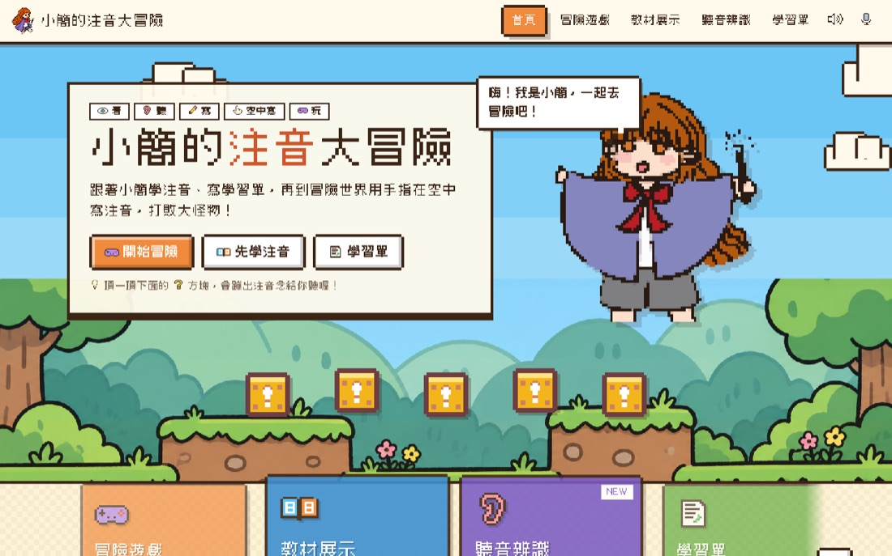
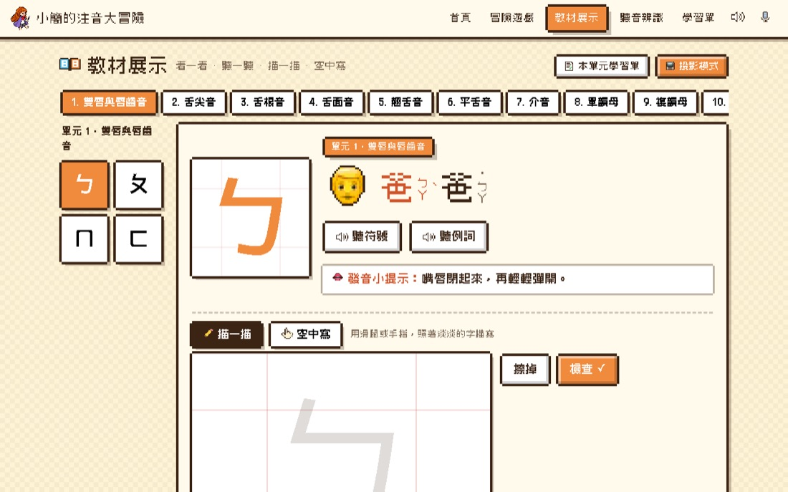
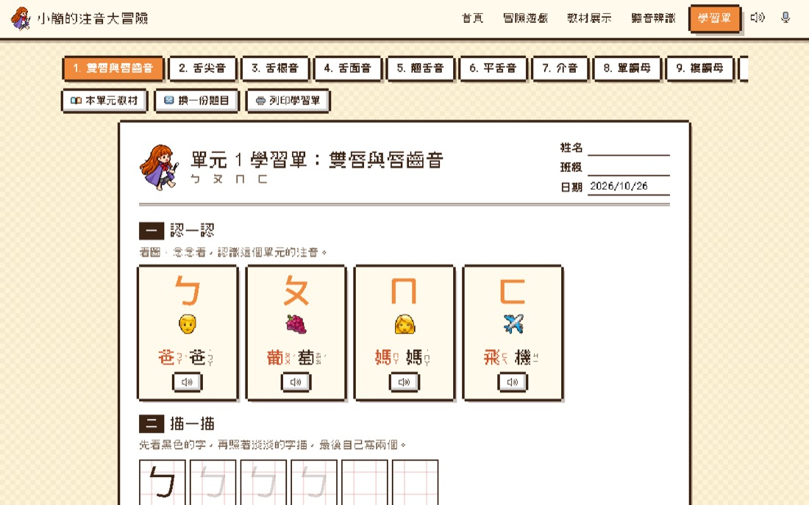
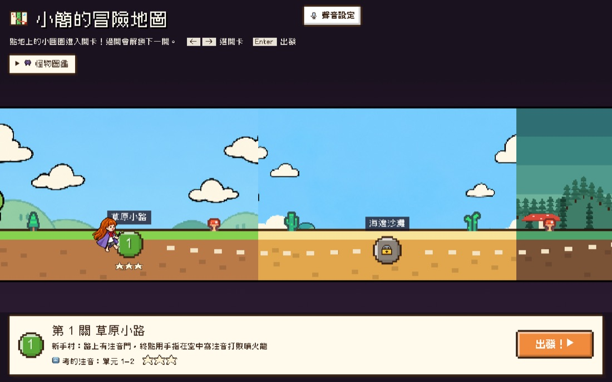

01・注音教育網站
小簡的注音大冒險
以自己的像素角色「小簡」為主角，把注音符號學習做成一個完整的網站：橫向卷軸冒險遊戲、多模態教材、分單元學習單與聽音辨識練習，讓孩子在闖關中認識注音。
教材分為 10 個單元，每個符號都能「看、聽、描、空中寫」；遊戲中打倒大怪物的方式，是用鏡頭偵測手勢，在空中用食指寫出注音。學習單可線上批改，也能列印成 A4 紙本，並針對ㄣㄥ、ㄓㄗ等容易混淆的音設計聽音分辨題。
- 我的角色
- 企劃、角色與介面設計、教材內容編排；運用 AI 工具協助程式開發
- 設計重點
- 遊戲化闖關、多感官學習、教師可投影與列印